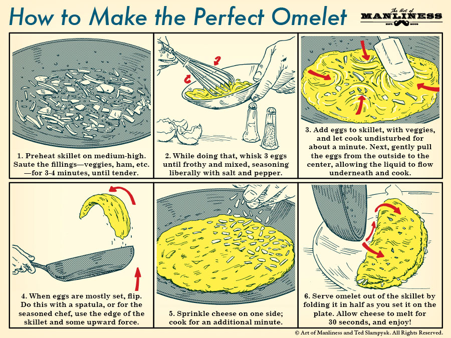

Survivre à un monde débordant d'effets
Qui suis-je ?
- Benoît Lemoine
- @benoit_lemoine
- Développeur full-stack chez Mnubo, à Montréal
- Nous recrutons !
Effet de bord ?
Tout ce qui n'est pas retourné
Exception
def impureParse(str: String): Int = str.toInt
impureParse("test") //throw java.lang.NumberFormatException
Mutabilité
var i = 1;
def add(j: Int): Int = {
i += j
i
}
add(2) // 3
i // also 3
Renvoyer Unit
def doSomething(): Unit = ()
les IOs
scala.io.Source.fromFile("/a_file.txt").getLines
println("Hello")
Random.nextInt()
Utiliser du code impure
def impureAdd(i: Int, j:Int): Int = {
println("Hello")
i + j
}
Exemple

T(ype)D(riven)D(evelopment)
case class Can()
case class Coin()
def sell(money: Coin): Can = ???
val can1 = sell(Coin())
val can2 = sell(Coin())
val can3 = sell(Coin())
val cans = List(can1, can2, can3)
println("cans", cans)
SDK
object ApiLowLevel {
// true if OK, false if it can't deliver
def giveACan(): Boolean = ???
}
Happy Path
var stock = 10
def sell(money: Coin): Can = {
if (stock > 0) {
if (ApiLowLevel.giveACan()) {
stock = stock - 1
Can()
}
}
}
NE COMPILE PAS
Happy Path
var stock = 10
def sell(money: Coin): Can = {
if (stock > 0) {
if (ApiLowLevel.giveACan()) {
stock = stock - 1
Can()
} else {
throw new Exception("Can stuck")
}
} else {
throw new Exception("No more stock")
}
}
L'appelant doit gérer les effets de bord
Sans nécessairement savoir qu'ils existent !
Effectful calling
val cans = mutable.MutableList[Can]()
val errors = mutable.MutableList[Throwable]()
try {cans += sell(Coin())} catch {case e => errors += e}
try {cans += sell(Coin())} catch {case e => errors += e}
try {cans += sell(Coin())} catch {case e => errors += e}
println("cans", cans)
println("errors", errors)
Transforme l'argent en canette...
...parfois
Option
var stock = 10
def sell(money: Coin): Option[Can] = {
if (stock > 0) {
if (ApiLowLevel.giveACan()) {
stock = stock - 1
Some(Can())
} else {
None
}
} else {
None
}
}
Différentier les erreurs
Try ?
sealed trait MachineError
object MachineError {
case object CanStuck extends MachineError
case object EmptyStock extends MachineError
}
Either
var stock = 10
def sell(money: Coin): Either[MachineError, Can] = {
if (stock > 0) {
if (ApiLowLevel.giveACan()) {
stock = stock - 1
Right(Can())
} else {
Left(CanStuck)
}
} else {
Left(EmptyStock)
}
}
Either
val maybeCans: Seq[Either[MachineError, Can]] = List(
sell(Coin()),
sell(Coin()),
sell(Coin())
)
val cans: Seq[Can] = maybeCans.collect {
case Right(can) => can
}
val errors: Seq[MachineError] = maybeCans.collect {
case Left(e) => e
}
println("cans", cans)
println("errors", errors)
Mutabilité
- Debugging
- Parallélisme
TODO PHOTOSHOP d'une vending machine avec 2 coté / parallelisme?
Passer l'état en paramètre
type CanOrErr = Either[MachineError, Can]
def sell(money: Coin)(stock: Int): (Int, CanOrErr) = {
if (stock > 0) {
if (ApiLowLevel.giveACan()) {
(stock - 1, Right(Can()))
} else {
(stock, Left(CanStuck))
}
} else {
(stock, Left(EmptyStock))
}
}
Mutabilité
val (stock1, maybeCan1) = sell(Coin())(10)
val (stock2, maybeCan2) = sell(Coin())(stock1)
val (stock3, maybeCan3) = sell(Coin())(stock2)
val maybeCans = List(maybeCan1, maybeCan2, maybeCan3)
val cans = maybeCans.collect {
case Right(snack) => snack
}
val errors = maybeCans.collect {
case Left(e) => e
}
println("cans", cans)
println("errors", errors)
println("stock", stock3)
Généralisation
type State[S, T] ~ (S) => (S, T)
Cats
https://typelevel.org/cats/
import cats.data.State
def sell(coin: Coin): State[Int, CanOrErr] = State { stock =>
if (stock > 0) {
if (ApiLowLevel.giveACan()) {
(stock - 1, Right(Can()))
} else {
(stock, Left(CanStuck))
}
} else {
(stock, Left(EmptyStock))
}
}
State
val state: State[Int, List[CanOrErr]] = for {
maybeCan1 <- sell(Coin())
maybeCan2 <- sell(Coin())
maybeCan3 <- sell(Coin())
} yield List(maybeCan1, maybeCan2, maybeCan3)
val (stock, maybeCans) = state.run(10).value
val cans = maybeCans.collect { case Right(can) => can }
val errors = maybeCans.collect { case Left(e) => e }
println("cans", cans)
println("errors", errors)
println("stock", stock)
Description / Interpretation
Les IOs
type IO[A] ~ (RealWorld) => (RealWorld, A)
Controverse
IOest un marqueur optionnel- Chaque ligne est un IO , car Scala est strict
- etc.
Side Effect ~ type
- calcul pouvant s'arreter
Option - calcul pouvant s'arreter avec une raison
Either - calcul asynchrone
Future - calcul écrivant quelque part
cats.data.Writer - calcul lisant une configuration
cats.data.Reader - calcul modifiant un état interne
cats.data.State
Gérer les piles d'effet
Cycle sans fin...
Faire le cycle avec des photos
object Pocket {
def getCoin(): Option[Coin] = ???
}
object Api {
def getACan(coin: Coin): Future[Option[Can]] = ???
}
object Trash {
def recycle(can: Can): Future[Option[Coin]] = ???
}
Cycle sans fin
val eventualMaybeCoin: Future[Option[Coin]] = {
Pocket.getCoin() match {
case Some(coin) => Api.getACan(coin).flatMap {
case Some(can) => Trash.recycle(can)
case None => Future(None)
}
case None => Future(None)
}
}
OptionT
type OptionT[M[_], A] ~ M[Option[A]]
OptionT
val eventualMaybeCoin: OptionT[Future, Coin] = for {
coin <- OptionT.fromOption[Future](Pocket.getCoin())
snack <- OptionT(Api.getASnack(coin))
newCoin <- OptionT(Trash.recycle(snack))
} yield {
newCoin
}
val r: Future[Option[Coin]] = eventualMaybeCoin.value
Monad Transformers
- Un type monadique
- représentant la combinaison d'un type représentant un effet
- avec un type monadique
Monad Transformers
- OptionT
- EitherT
- StateT
- ReaderT
- WriterT
Plus de 2 effets ?
type OptionF[A] = OptionT[Future, A]
val maybeCoin = OptionT.fromOption[Future](Pocket.getCoin())
val recipe: WriterT[OptionF, String, Coin] = for {
coin <- WriterT.lift[OptionF, String, Coin](maybeCoin)
_ <- WriterT.tell[OptionF, String](s"got Coin $coin")
snack <- WriterT.lift(OptionT(Api.getACan(coin)))
_ <- WriterT.tell[OptionF, String](s"got Snack $snack")
newCoin <- WriterT.lift(OptionT(Trash.recycle(snack)))
_ <- WriterT.tell[OptionF, String](s"recycled Snack $snack")
} yield newCoin
val r: Future[Option[(String, Coin)]] = recipe.run.value
Extensible effect
- Manipulation simple dans un
for - Les effets s'accumulent durant la description
- A l'éxecution chaque effet se transforme en type dans le résultat
Exemple
- Eff[(Option), Coin]
- Eff[(Writer[String, ?], Option), Coin]
- Eff[(Writer[String, ?], Option, Async), Can]
- Eff[(Writer[String, ?], Async), Option[Can]]
- Eff[(Async), (List[String], Option[Can])]
- Eff[(), Future[(List[String], Option[Can])]]
- Future[(List[String], Option[Can])]
https://github.com/atnos-org/eff
type EitherStr[A] = Either[String, A]
type _eitherStr[R] = EitherStr |= R
def add[R : _option : _eitherStr](
maybeInt: Option[Int],
intOrStr: Either[String, Int]): Eff[R, Int] = for {
a <- fromOption(maybeInt)
b <- fromEither(intOrStr)
} yield a + b
type Stack = Fx.fx2[Option, EitherStr]
add[Stack](Some(1), Right(2)).runOption.runEither.run
//Right(Some(3))
add[Stack](Some(1), Left("err")).runOption.runEither.run
//Left("err")
Exemple
type WriterStr[A] = Writer[String, A]
type _writerStr[R] = WriterStr |= R
type Stack = Fx.fx3[WriterStr, Option, TimedFuture]
Exemple
def recipe[R : _writerStr : _option : _future]: Eff[R, Coin] =
for {
coin <- fromOption(Pocket.getCoin())
_ <- tell("got Coin " + coin)
maybeCan <- fromFuture(Api.getACan(coin))
can <- fromOption(maybeCan)
_ <- tell("got Can " + can)
maybeNewCoin <- fromFuture(Trash.recycle(can))
newCoin <- fromOption(maybeNewCoin)
_ <- tell("recycled Can " + can)
} yield newCoin
val result: Future[Option[(Coin, List[String])]] =
recipe[Stack].runWriter.runOption.runAsync
Conclusion
Les effets de bords :
- Source de surprise - et donc d'erreur -
- Encodable dans des types
- Monad Transformers et Eff